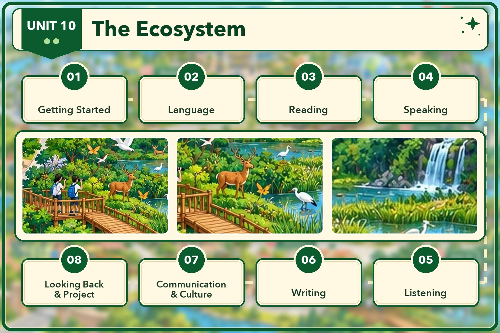

Lesson 1 · Getting started — Ecosystems and humans Lesson 2 · Language Lesson 3 · Reading: A national park Lesson 4 · Speaking: Protecting local biodiversity Lesson 5 · Listening: The human impact on ecosystems Lesson 6 · Writing: Spending money on restoring local ecosystems Lesson 7 · Communication and Culture / CLIL: Protecting the ecosystem Lesson 8 · Looking back and Project: A poster about a local ecosystem — chưa có bài giảngĐã dựng: Lesson 1, 2, 3, 4, 5, 6, 7. 1 thẻ còn lại đang khoá. Dựng xong tiết nào thì mở khoá thẻ đó.